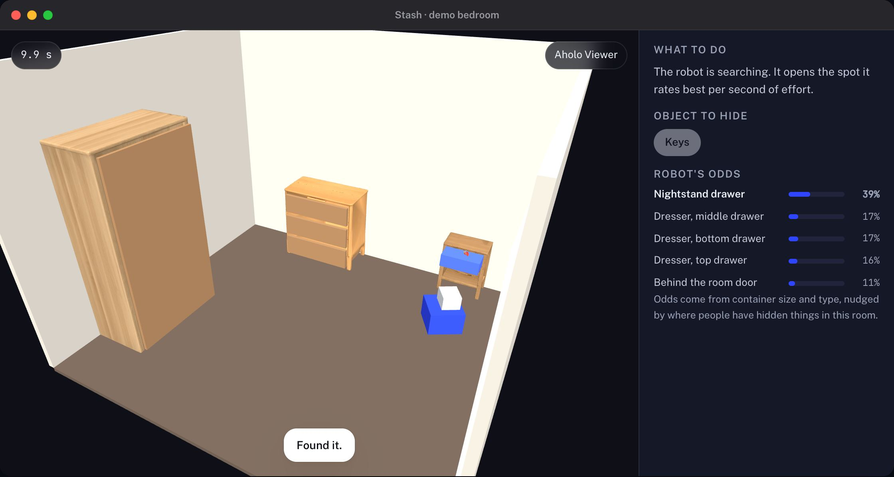
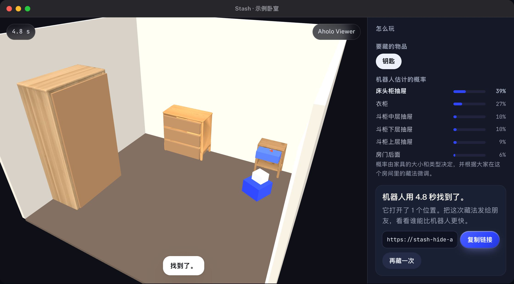
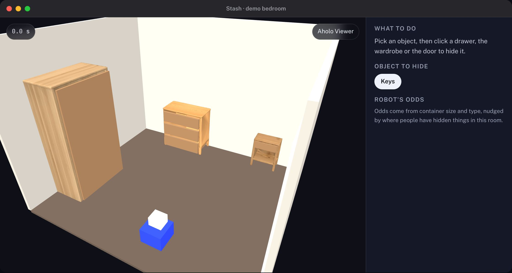
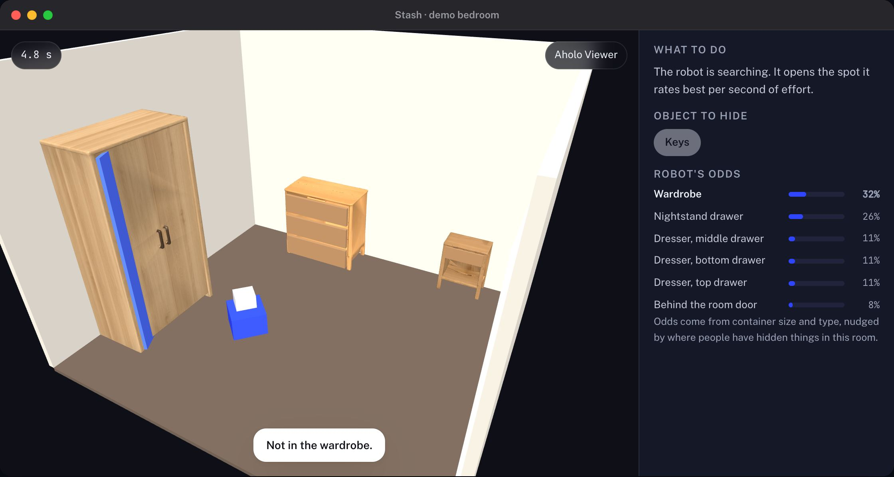
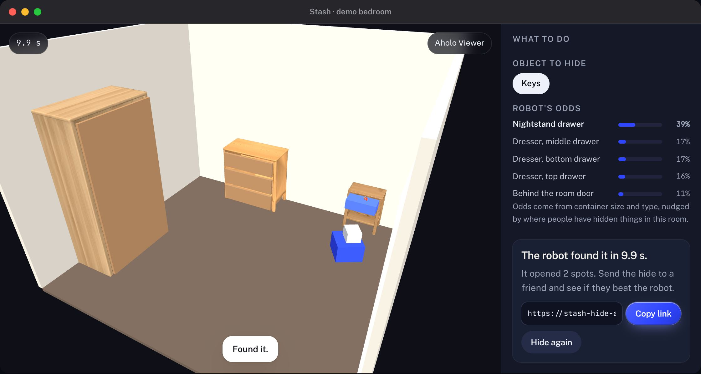
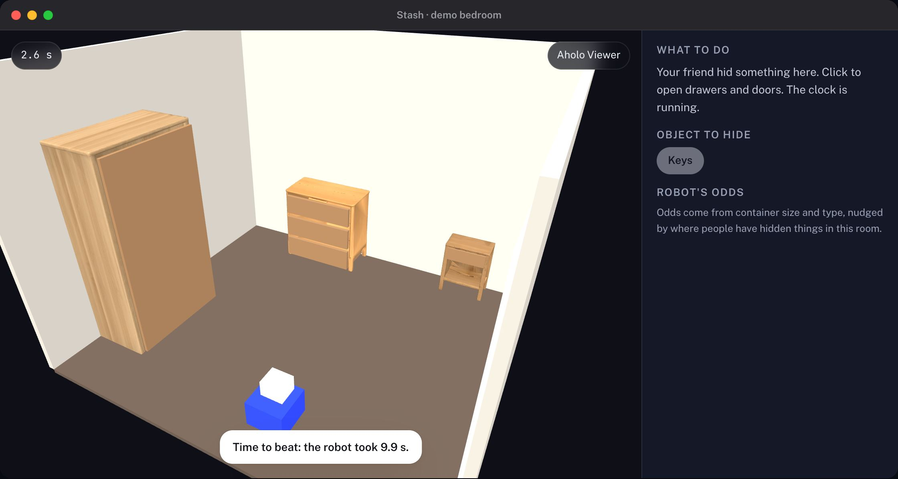
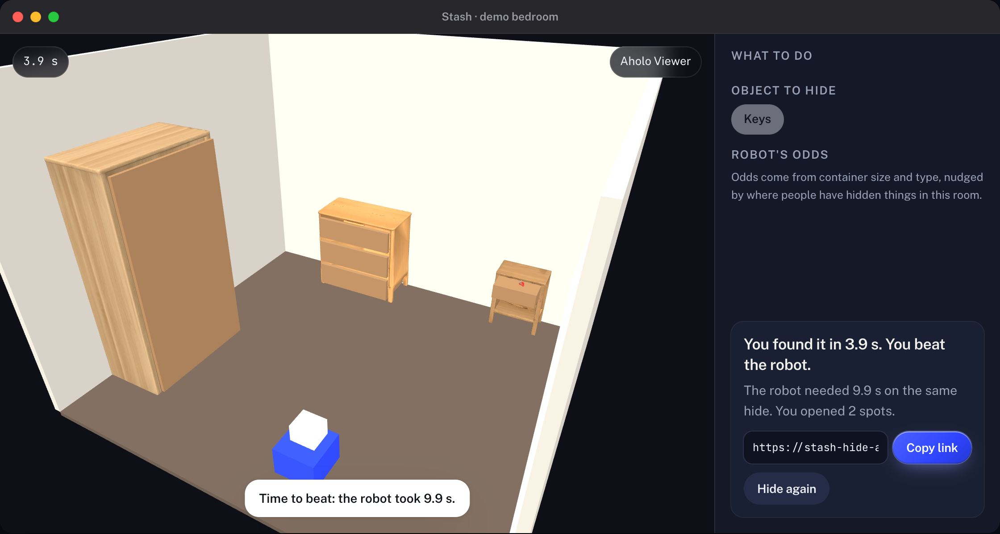
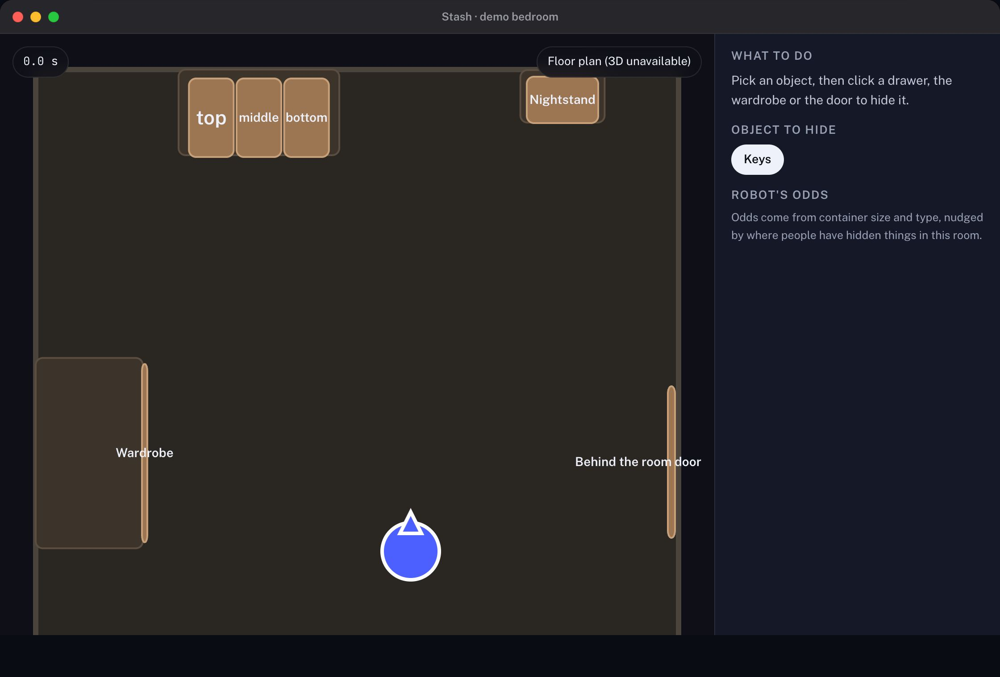
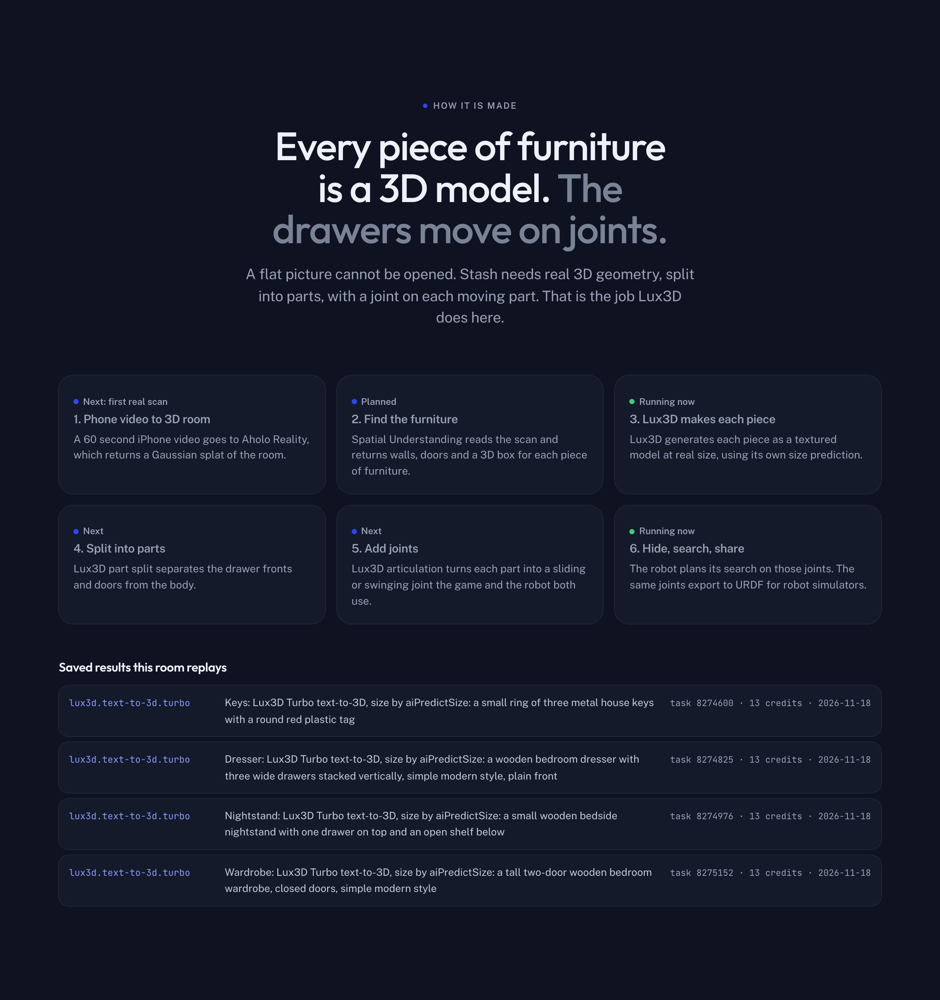

Out-hide a robot in a real room.
You hide something in a drawer, and a simulated robot searches for it, opening one drawer or door at a time and showing its odds for each spot. Then you send the hide to a friend and see who finds it faster. The furniture is generated with Lux3D, and the drawers and doors move on joints that also export to URDF.
| Play | stash-hide-and-seek.vercel.app |
| Chinese | stash-hide-and-seek.vercel.app/?lang=zh |
| Code | github.com/YASASWIP012/stash-hide-and-seek |
| Tracks | Gaming, Embodied AI |
| Team | yasaswi (solo) |

选一件物品，藏进抽屉、衣柜或房门后面。一个模拟机器人随后进房搜索：它一次打开一个位置，并实时显示它对每个位置的判断概率。找到后，可以把这次藏法用链接发给朋友，比比谁找得更快。整个流程无需注册，在浏览器里就能玩，有中英文两种界面。
机器人不是学出来的策略，而是规则公开的模拟智能体：每一步打开“概率除以所需时间”最高的位置，没找到就排除。初始概率由家具体积和类型决定，再用玩家记录过的藏法做贝叶斯更新。同一套关节可以导出为 URDF，供机器人仿真器使用。

Screenshots from the live site, taken in a desktop browser on 18 Nov. This round ended at 9.9 s on the game clock.



Opening the link starts a timed search in the same room. The hide lives in the link, so nothing is stored on a server and links work in either language.



There is one verb, open. Because the robot shows its odds, you can read its search and try to beat it by hiding where it rates you least likely. The share link adds a second player on the same hide, and the result is two times side by side: yours and the robot's.
A drawer in a flat image cannot be opened. The game needs real 3D geometry, split into parts, with a joint on each moving part. The table says which steps are in the live game today and which have run but are not wired in yet.
| Tool | Role in Stash | Evidence | Status |
|---|---|---|---|
| Lux3D text-to-3D (G1-Turbo) | Generates the dresser, nightstand, wardrobe and the keys you hide, as textured GLB models. | tasks 8274600, 8274825, 8274976, 8275152 | In the game |
| Lux3D size prediction (aiPredictSize) | Gives each piece a real-world size, so the drawers and the robot share one metric scale. | Sizes on page 6 | In the game |
| Lux3D part split | Separates the drawer fronts from the dresser body, so each drawer can move on its own. | task 8305408, succeeded | Ran; not wired in |
| Lux3D articulation | Adds a sliding joint to each drawer. These joints replace the estimated ones, and the robot and the URDF export read the same joints. | task 8305519, succeeded | Ran; not wired in |
| Aholo Viewer (@manycore/aholo-viewer) | Renders the room, loads the GLBs, animates drawers and doors, and handles picking. | Live site | In the game |
| Aholo Reality | Turns a 60 second iPhone walk-around of a real bedroom into a 3D Gaussian splat. | Filming guide written | Waiting for video |
| Spatial Understanding | Reads the scan and returns a 3D box for each piece of furniture, which places the Lux3D pieces in the real room. | 1,000 credits per call | Planned |
The part split and articulation results are stored on Aholo's file host. Since the afternoon of 18 Nov that host has refused connections from the network the project is built on, so the files are not downloaded yet. Both task ids and result links are saved, and fetching them again costs nothing.
| Asset | Prompt sent to Lux3D | Predicted size (m) | Lux3D GLB | Web GLB | Task |
|---|---|---|---|---|---|
| Dresser | a wooden bedroom dresser with three wide drawers stacked vertically, simple modern style, plain front | 0.90 × 0.89 × 0.48 | 15.9 MB | 1.6 MB | 8274825 |
| Nightstand | a small wooden bedside nightstand with one drawer on top and an open shelf below | 0.47 × 0.60 × 0.29 | 14.1 MB | 1.0 MB | 8274976 |
| Wardrobe | a tall two-door wooden bedroom wardrobe, closed doors, simple modern style | 1.07 × 2.00 × 0.60 | 13.3 MB | 0.8 MB | 8275152 |
| Keys | a small ring of three metal house keys with a round red plastic tag | n/a | 22.5 MB | 2.5 MB | 8274600 |
Sizes are width × height × depth from aiPredictSize, not measured. Web copies were made locally with glTF-Transform (weld, simplify, 512 px JPEG textures), which cost no credits.
The first playable room used the Lux3D pieces as fixed bodies, with plain boxes for the moving parts and joint limits I estimated by hand: drawers slide 0.32 m (nightstand 0.18 m), the wardrobe door swings 1.75 rad and the room door 1.4 rad. Every one of these is marked "estimate" in the room file, on the page and in the URDF.
On 18 Nov the full-resolution dresser went through part split (30 credits) and the split result went through articulation (28 credits) with the prompt: "Keep the dresser body fixed. Add a sliding joint to each drawer so it pulls straight out toward the front." Both succeeded. Next, these parts and joints replace the boxes, and the joint source changes from "estimate" to "lux3d-articulation".
A friend films their bedroom on an iPhone, with written consent. Reality builds the splat, the pieces are fitted to it, and a tape measure checks each drawer's travel against the joint limits. That comparison goes in a table on the site; until it exists, every limit is called an estimate.
The robot's walking and opening times, the odds it starts from and the URDF limits are all computed in metres. Because Lux3D predicts a real-world size for each piece, the dresser, the nightstand and the wardrobe come out at believable proportions to each other and to the robot without hand scaling. A real tape measurement will check those predictions once a real room is scanned.
| When (IST) | Change |
|---|---|
| 18 Nov 11:00 | First playable version: hide, robot search, share link, URDF export. |
| 18 Nov 14:09 | In the floor plan, the three stacked drawers covered each other and only the top one could be clicked. The plan now lays a stack out side by side. Click-through tests added for desktop and phone. |
| 18 Nov 14:10 | I had budgeted text-to-3D at 1 credit. The usage page showed 13 per task, so the ledger was corrected and live generation was capped at 3 tasks a day. |
| 18 Nov 14:19 | A per-visitor limit on live generation. Room videos and scans are kept out of the repository until the owner consents in writing. |
| 18 Nov 14:25 | The URDF button could be clicked before the room loaded. It now stays disabled until then. |
| 18 Nov 16:08 | Part split and articulation run on the dresser. |
| 18 Nov 19:21 | Simplified Chinese version of the page and the game, picked from the browser language or a toggle. |
| 18 Nov 19:45 | Screenshots for this report showed the floor-plan labels on side-by-side drawers running together. Labels now shrink to fit and stay inside the room. |

The robot is a simulated agent with a stated rule, not a trained policy. Before each move it scores every unopened spot by its chance of holding the object divided by the seconds it would take to walk there, open it and look inside. It opens the best one, and if the object isn't there, it rules that spot out and renormalises.
Its starting odds come from the furniture itself: the cube root of each container's volume times a weight for its kind (drawer 1.0, wardrobe 1.2, door 0.5). Hides logged in a room shift the odds through a Dirichlet posterior with a prior weight of 4, so a handful of hides nudges the robot without overwhelming it.
| Constant | Value | Note |
|---|---|---|
| Walking speed | 0.6 m/s | Design choices, not measurements of a real robot. |
| Drawer pull speed | 0.25 m/s | |
| Door swing speed | 1.2 rad/s | |
| Time to look inside | 0.8 s |
The search runs ahead of time and is replayed by a pure function of time, so every judge sees the same search for the same hide, and the tests check it frame by frame.
The same joints the game animates are exported as URDF: a link for each moving part, a fixed mount for its body, and a prismatic or revolute joint with its axis and limits. Coordinates are converted from the viewer's Y-up to the Z-up that robot tools expect. Each joint carries a comment that says where its limits came from.
<!-- Demo bedroom (placeholder). Joint limits marked "estimate" were not measured. --> <link name="dresser_top_part"> <visual><geometry><box size="0.8 0.44 0.22"/></geometry></visual> </link> <!-- Dresser, top drawer: limits from estimate --> <joint name="dresser_top_joint" type="prismatic"> <parent link="room_base"/> <child link="dresser_top_part"/> <origin xyz="-0.55 1.33 0.73" rpy="0 0 0"/> <axis xyz="0 -1 0"/> <limit lower="0" upper="0.32" effort="20" velocity="1"/> </joint>
An excerpt of the file the site downloads today: six movable joints, all marked as estimates. The renderer and the URDF are two separate outputs built from one room file; Stash does not run a physics engine.
| Credit ledger (18 Nov) | Credits | Balance |
|---|---|---|
| Starting credits (first API key, then team credits) | +3,600 | 3,600 |
| 4 × Lux3D text-to-3D Turbo | −52 | 3,548 |
| Lux3D part split, dresser | −30 | 3,518 |
| Lux3D articulation, dresser | −28 | 3,490 |
Prices from labs.aholo.ai/pricing, read 18 Nov. The text-to-3D charge was checked against the usage page; the last two rows are from the pipeline's ledger. At least 1,200 credits stay in reserve for judging.
Once rooms are scanned, each one becomes a real space whose furniture opens on stated joints and exports to URDF, and each hide records where a person chose to put something. A household robot that searches for things needs both kinds of data. A game is a cheap way to collect them.